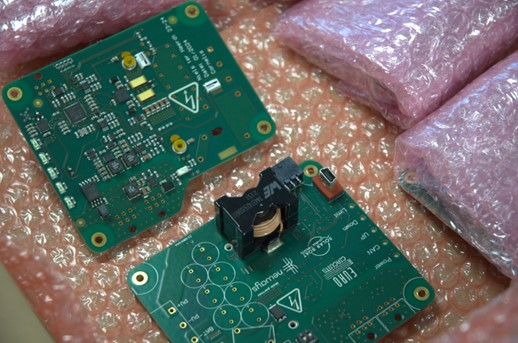
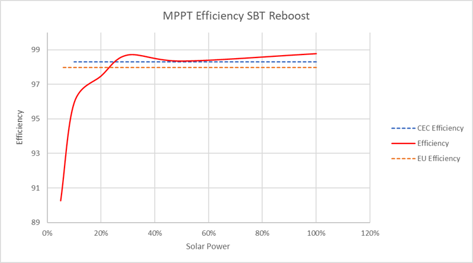
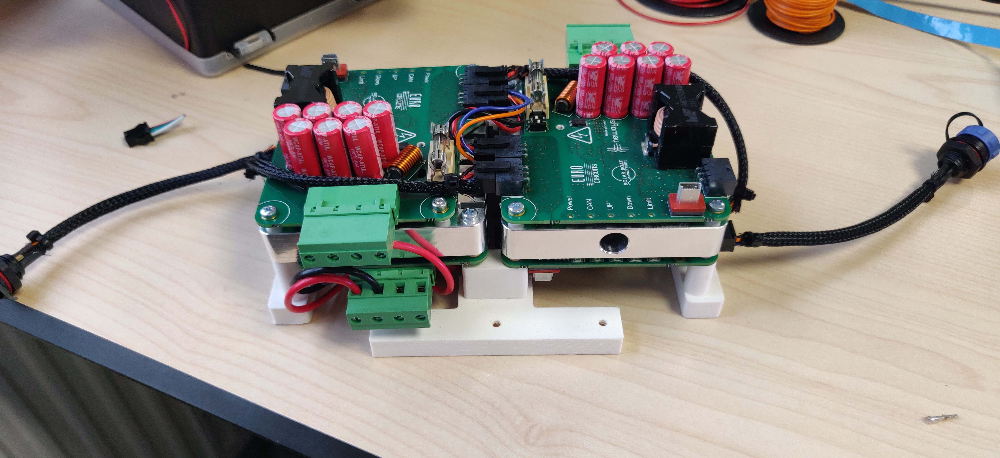

About the Project
During my year at Solar Boat Twente we had many challenges to tackle. One of the main challenges was that the Maximum Power Point Trackers (MPPT) on the boat where very inefficient namely 80%. An open source MPPT was fount from Tjitte (TPEE). This was used as a basis for the design as it was already known that the basis design worked but it needed to be changed to our application.

PCB Layout
The first step was to dive into the redesigning of PCBs. For the design of PCBs Altium Designer was used.
The main points that were improved during the design were:
- redesign the CAN interface
- Improved component selection (Different mosfets, inductors and capacitors)
- Changed traces to be more Short circuit safe

Production
After having redesigned the PCB layout it was time for production. One of the main requirements was making it more reliable. This was achieved by not soldering the SMD chips by hand but only the throughhole components. Some SMD chips had to be soldered by hand, this was done using a small soldering iron and a microscope.

Testing
To see if the MPPTs that were produced are as efficient as hoped a test was performed at one of our partners who have a solar panel simulator which can be used to make an efficiency graph. As you can specificly control the avalaible power and you can measure the output power.

Implementation
The last step in the implementation was that it stayed cool
